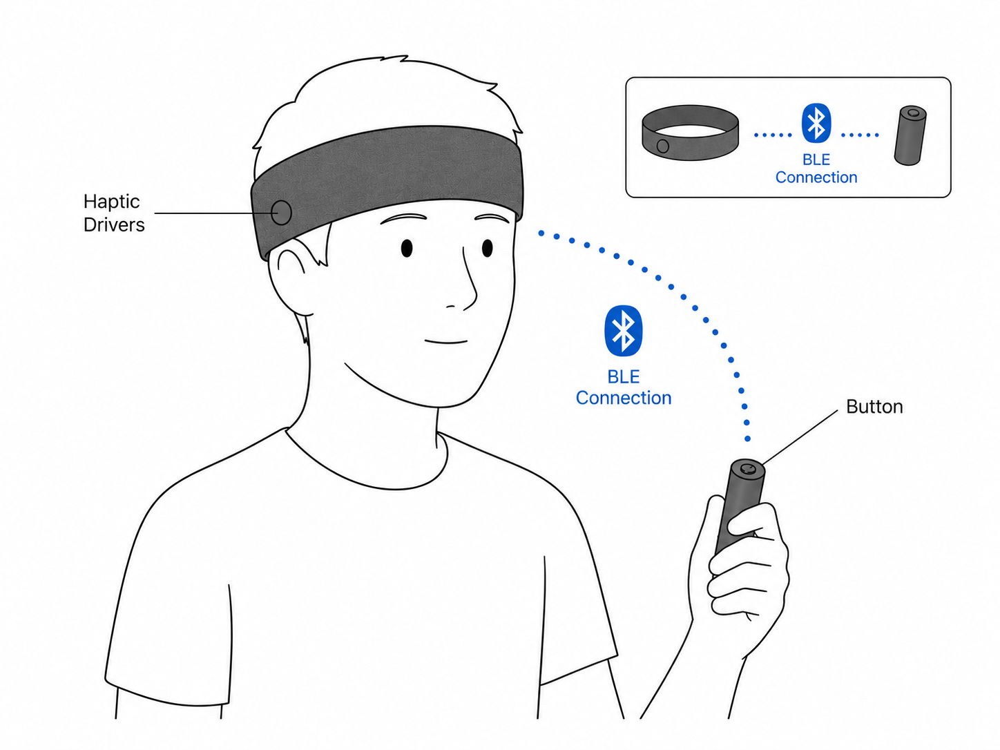
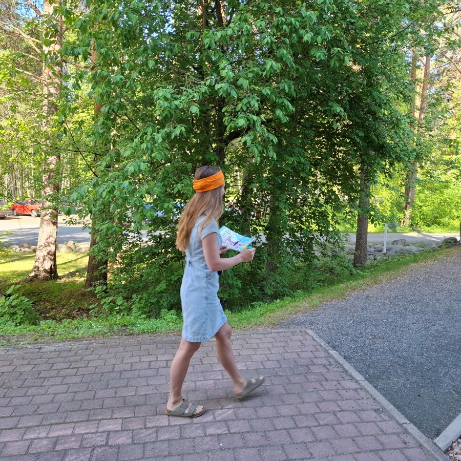
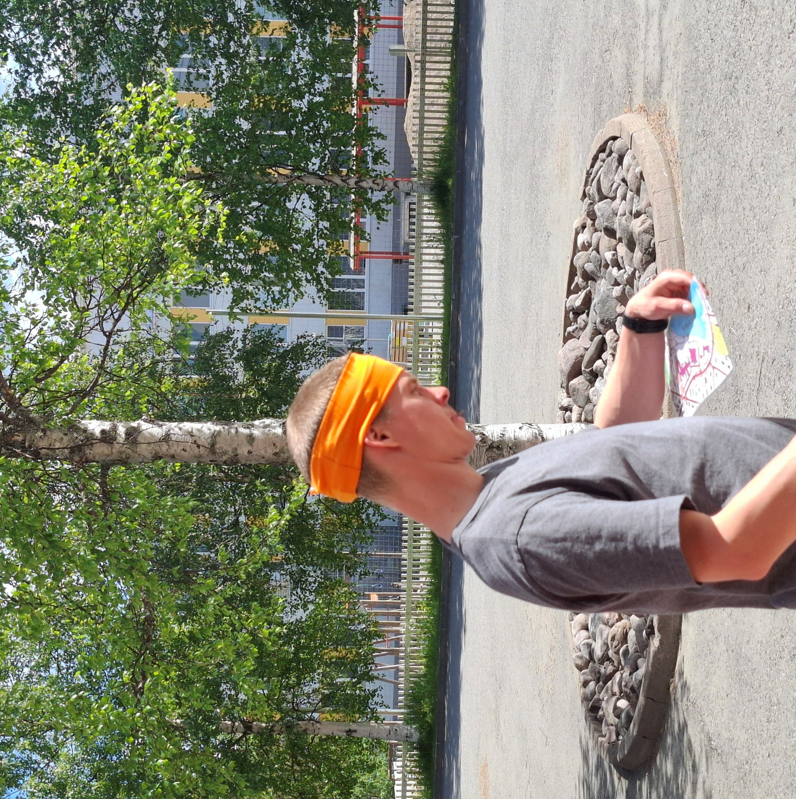

Haptic Headband
The haptic headband system is designed to test whether users notice haptic vibration signals in different real-world scenarios. The data is used to reasearch on wearable devices in the AWE - Augmented Wearable Computing -project. The system consists of two wireless devices that communicate over Bluetooth Low Energy (BLE).
Headband device — worn by the participant, produces random haptic vibrations Button device — held by the participant, used to register when a vibration is noticed
The researcher controls sessions using a physical button on the headband box and monitors status via a NeoPixel LED. All data is stored on an SD card and exported as a CSV file for analysis in Excel.


